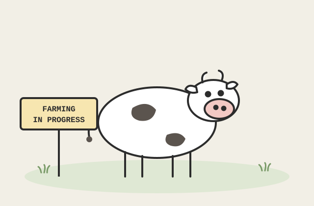

My Beef with the Algorithm
On social media feeds, and why this site refuses to be one

This post is being grown the slow way. In the meantime, the cow and I would like you to know the thesis: a feed optimized for your attention is not optimized for your understanding, and the difference matters enormously when the topic is your kid.